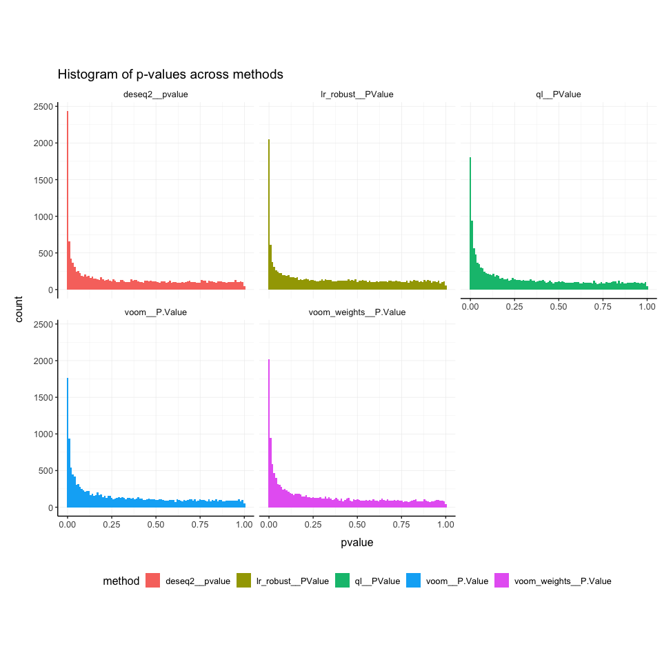

tidybulk is a powerful R package designed for modular transcriptomic data analysis that brings transcriptomics to the tidyverse.
Why tidybulk?
Tidybulk provides a unified interface for comprehensive transcriptomic data analysis with seamless integration of SummarizedExperiment objects and tidyverse principles. It streamlines the entire workflow from raw data to biological insights.
Functions/utilities available
Abundance Normalization Functions
| Function | Description |
|---|---|
scale_abundance() |
Scale abundance data |
quantile_normalise_abundance() |
Quantile normalization |
adjust_abundance() |
Adjust abundance for unwanted variation |
fill_missing_abundance() |
Fill missing abundance values |
impute_missing_abundance() |
Impute missing abundance values |
Filtering and Selection Functions
| Function | Description |
|---|---|
identify_abundant() |
Identify abundant transcripts without removing them |
keep_abundant() |
Keep abundant transcripts |
keep_variable() |
Keep variable transcripts |
filterByExpr() |
Filter by expression |
Dimensionality Reduction Functions
| Function | Description |
|---|---|
reduce_dimensions() |
Reduce dimensions with PCA/MDS/tSNE/UMAP |
rotate_dimensions() |
Rotate dimensions |
remove_redundancy() |
Remove redundant features |
Clustering Functions
| Function | Description |
|---|---|
cluster_elements() |
Cluster elements with various methods |
kmeans clustering |
K-means clustering |
SNN clustering |
Shared nearest neighbor clustering |
hierarchical clustering |
Hierarchical clustering |
DBSCAN clustering |
Density-based clustering |
Differential Analysis Functions
| Function | Description |
|---|---|
test_differential_expression() |
Test differential expression with various methods |
Cellularity Analysis Functions
| Function | Description |
|---|---|
deconvolve_cellularity() |
Deconvolve cellularity with various methods |
cibersort() |
CIBERSORT analysis |
Gene Enrichment Functions
| Function | Description |
|---|---|
test_gene_enrichment() |
Test gene enrichment |
test_gene_overrepresentation() |
Test gene overrepresentation |
test_gene_rank() |
Test gene rank |
Utility Functions
| Function | Description |
|---|---|
describe_transcript() |
Describe transcript characteristics |
get_bibliography() |
Get bibliography |
resolve_complete_confounders_of_non_interest() |
Resolve confounders |
Validation and Utility Functions
| Function | Description |
|---|---|
check_if_counts_is_na() |
Check if counts contain NA values |
check_if_duplicated_genes() |
Check for duplicated genes |
check_if_wrong_input() |
Validate input data |
log10_reverse_trans() |
Log10 reverse transformation |
logit_trans() |
Logit transformation |
All functions are directly compatible with SummarizedExperiment objects and follow tidyverse principles for seamless integration with the tidyverse ecosystem.
Scientific Citation
Mangiola, Stefano, Ramyar Molania, Ruining Dong, Maria A. Doyle, and Anthony T. Papenfuss. 2021. “Tidybulk: An R tidy framework for modular transcriptomic data analysis.” Genome Biology 22 (42). https://doi.org/10.1186/s13059-020-02233-7
Genome Biology - tidybulk: an R tidy framework for modular transcriptomic data analysis
In this vignette we will use the airway dataset, a SummarizedExperiment object containing RNA-seq data from an experiment studying the effect of dexamethasone treatment on airway smooth muscle cells. This dataset is available in the airway package.
This workflow, will use the tidySummarizedExperiment package to manipulate the data in a tidyverse fashion. This approach streamlines the data manipulation and analysis process, making it more efficient and easier to understand.
## tidySummarizedExperiment says: Printing is now handled externally. If you want to visualize the data in a tidy way, do library(tidyprint). See https://github.com/tidyomics/tidyprint for more information.
##
## Attaching package: 'tidySummarizedExperiment'
## The following object is masked from 'package:generics':
##
## tidyHere we will add a gene symbol column to the airway object. This will be used to interpret the differential expression analysis, and to deconvolve the cellularity.
library(org.Hs.eg.db)## Loading required package: AnnotationDbi
##
## Attaching package: 'AnnotationDbi'
## The following object is masked from 'package:dplyr':
##
## select
##
library(AnnotationDbi)
# Add gene symbol and entrez
airway <-
airway |>
mutate(entrezid = mapIds(org.Hs.eg.db,
keys = .feature,
keytype = "ENSEMBL",
column = "ENTREZID",
multiVals = "first"
)) Installation Guide
Bioconductor
if (!requireNamespace("BiocManager")) install.packages("BiocManager")
BiocManager::install("tidybulk")Github
devtools::install_github("stemangiola/tidybulk")Comprehensive Example Pipeline
This vignette demonstrates a complete transcriptomic analysis workflow using tidybulk, with special emphasis on differential expression analysis.
Data Overview
We will use the airway dataset, a SummarizedExperiment object containing RNA-seq data from an experiment studying the effect of dexamethasone treatment on airway smooth muscle cells:
airway## class: RangedSummarizedExperiment
## dim: 63677 8
## metadata(1): ''
## assays(1): counts
## rownames(63677): ENSG00000000003 ENSG00000000005 ... ENSG00000273492
## ENSG00000273493
## rowData names(10): gene_id gene_name ... seq_coord_system symbol
## colnames(8): SRR1039508 SRR1039509 ... SRR1039520 SRR1039521
## colData names(9): SampleName cell ... Sample BioSampleLoading tidySummarizedExperiment automatically abstracts this object as a tibble, making it compatible with tidyverse tools while maintaining its SummarizedExperiment nature:
class(airway)
Step 1: Data Preprocessing
Aggregate Duplicated Transcripts (optional)
Aggregate duplicated transcripts (e.g., isoforms, ensembl IDs):
Transcript aggregation is a standard bioinformatics approach for gene-level summarization.
# Add gene names to rowData
rowData(airway)$gene_name = rownames(airway)
# Aggregate duplicates
airway = airway |> aggregate_duplicates(.transcript = gene_name, aggregation_function = mean)Abundance Filtering: tidybulk approaches only
Abundance filtering can be performed using tidybulk’s built-in methods (Robinson, McCarthy, and Smyth 2010; Chen, Lun, and Smyth 2016).
1. tidybulk: Default, formula_design, and CPM threshold
# Default (simple filtering)
airway_abundant_default = airway |> keep_abundant()## Warning in filterByExpr.DGEList(y, design = design, group = group, lib.size =
## lib.size, : All samples appear to belong to the same group.
# With factor_of_interest (recommended for complex designs)
airway_abundant_formula = airway |> keep_abundant(minimum_counts = 10, minimum_proportion = 0.5, factor_of_interest = dex)## Warning: The `factor_of_interest` argument of `keep_abundant()` is deprecated as of
## tidybulk 2.0.0.
## ℹ Please use the `formula_design` argument instead.
## ℹ The argument 'factor_of_interest' is deprecated and will be removed in a
## future release. Please use the 'design' or 'formula_design' argument instead.
## This warning is displayed once every 8 hours.
## Call `lifecycle::last_lifecycle_warnings()` to see where this warning was
## generated.
## Warning: The `factor_of_interest` argument of `identify_abundant()` is deprecated as of
## tidybulk 2.0.0.
## ℹ Please use the `formula_design` argument instead.
## ℹ The argument 'factor_of_interest' is deprecated and will be removed in a
## future release. Please use the 'design' or 'formula_design' argument instead.
## ℹ The deprecated feature was likely used in the tidybulk package.
## Please report the issue at <https://github.com/stemangiola/tidybulk/issues>.
## This warning is displayed once every 8 hours.
## Call `lifecycle::last_lifecycle_warnings()` to see where this warning was
## generated.
# With CPM threshold (using design parameter)
airway_abundant_cpm = airway |> keep_abundant(minimum_counts = 10, minimum_proportion = 0.5)2. Summary statistics and density plots
# Example: summary for default tidybulk filtering
# Before filtering
airway |> as_tibble() |> summarise(
n_features = n_distinct(.feature),
min_count = min(counts),
median_count = median(counts),
max_count = max(counts)
)## # A tibble: 1 × 4
## n_features min_count median_count max_count
## <int> <int> <dbl> <int>
## 1 63677 0 0 513766
# After filtering
airway_abundant_default |> as_tibble() |> summarise(
n_features = n_distinct(.feature),
min_count = min(counts),
median_count = median(counts),
max_count = max(counts)
)## # A tibble: 1 × 4
## n_features min_count median_count max_count
## <int> <int> <dbl> <int>
## 1 14224 8 394 513766
airway_abundant_formula |> as_tibble() |> summarise(
n_features = n_distinct(.feature),
min_count = min(counts),
median_count = median(counts),
max_count = max(counts)
)## # A tibble: 1 × 4
## n_features min_count median_count max_count
## <int> <int> <dbl> <int>
## 1 15926 0 310 513766
airway_abundant_cpm |> as_tibble() |> summarise(
n_features = n_distinct(.feature),
min_count = min(counts),
median_count = median(counts),
max_count = max(counts)
)## # A tibble: 1 × 4
## n_features min_count median_count max_count
## <int> <int> <dbl> <int>
## 1 14224 8 394 513766
# Merge all methods into a single tibble
airway_abundant_all =
bind_rows(
airway |> assay() |> as_tibble(rownames = ".feature") |> pivot_longer(cols = -.feature, names_to = ".sample", values_to = "counts") |> mutate(method = "no filter"),
airway_abundant_default |> assay() |> as_tibble(rownames = ".feature") |> pivot_longer(cols = -.feature, names_to = ".sample", values_to = "counts") |> mutate(method = "default"),
airway_abundant_formula |> assay() |> as_tibble(rownames = ".feature") |> pivot_longer(cols = -.feature, names_to = ".sample", values_to = "counts") |> mutate(method = "formula"),
airway_abundant_cpm |> assay() |> as_tibble(rownames = ".feature") |> pivot_longer(cols = -.feature, names_to = ".sample", values_to = "counts") |> mutate(method = "cpm")
)
# Density plot across methods
airway_abundant_all |>
as_tibble() |>
ggplot(aes(counts + 1, group = .sample, color = method)) +
geom_density() +
scale_x_log10() +
facet_wrap(~method) +
my_theme +
labs(title = "Counts after abundance filtering (tidybulk default)")
Update the airway object with the filtered data:
airway = airway_abundant_formulaTip: Use
formula_designfor complex designs, and use the CPM threshold for library-size-aware filtering.
Remove Redundant Transcripts
Redundancy removal is a standard approach for reducing highly correlated features.
airway_non_redundant =
airway |>
remove_redundancy(method = "correlation", top = 100)
# Make
airway |> as_tibble() |> summarise(
n_features = n_distinct(.feature),
min_count = min(counts),
median_count = median(counts),
max_count = max(counts)
)## # A tibble: 1 × 4
## n_features min_count median_count max_count
## <int> <int> <dbl> <int>
## 1 15926 0 310 513766
# Summary statistics
airway_non_redundant |> as_tibble() |> summarise(
n_features = n_distinct(.feature),
min_count = min(counts),
median_count = median(counts),
max_count = max(counts)
)## # A tibble: 1 × 4
## n_features min_count median_count max_count
## <int> <int> <dbl> <int>
## 1 15926 0 357 401539
# Plot before and after
# Merge before and after into a single tibble
airway_all = bind_rows(
airway |> assay() |> as_tibble(rownames = ".feature") |> pivot_longer(cols = -.feature, names_to = ".sample", values_to = "counts") |> mutate(method = "before"),
airway_non_redundant |> assay() |> as_tibble(rownames = ".feature") |> pivot_longer(cols = -.feature, names_to = ".sample", values_to = "counts") |> mutate(method = "after")
)
# Density plot
ggplot(as_tibble(airway_all), aes(counts + 1, group = .sample, color = method)) +
geom_density() +
scale_x_log10() +
facet_wrap(~method) +
my_theme +
labs(title = "Counts after removing redundant transcripts")
Filter Variable Transcripts
Keep only the most variable transcripts for downstream analysis.
Variance-based feature selection using edgeR methodology (Robinson, McCarthy, and Smyth 2010) is used for selecting informative features.
airway_variable = airway |> keep_variable()Visualize After Variable Filtering Variable Transcripts (optional)
# Before filtering
airway |> as_tibble() |> summarise(
n_features = n_distinct(.feature),
min_count = min(counts),
median_count = median(counts),
max_count = max(counts)
)## # A tibble: 1 × 4
## n_features min_count median_count max_count
## <int> <int> <dbl> <int>
## 1 15926 0 310 513766
# After filtering
airway_variable |> as_tibble() |> summarise(
n_features = n_distinct(.feature),
min_count = min(counts),
median_count = median(counts),
max_count = max(counts)
)## # A tibble: 1 × 4
## n_features min_count median_count max_count
## <int> <int> <dbl> <int>
## 1 500 0 46 76824
# Density plot
# Merge before and after into a single tibble
airway_all = bind_rows(
airway |> assay() |> as_tibble(rownames = ".feature") |> pivot_longer(cols = -.feature, names_to = ".sample", values_to = "counts") |> mutate(method = "before"),
airway_variable |> assay() |> as_tibble(rownames = ".feature") |> pivot_longer(cols = -.feature, names_to = ".sample", values_to = "counts") |> mutate(method = "after")
)
# Density plot
ggplot(as_tibble(airway_all), aes(counts + 1, group = .sample, color = method)) +
geom_density() +
scale_x_log10() +
facet_wrap(~method) +
my_theme +
labs(title = "Counts after variable filtering")
Scale Abundance
Scale for sequencing depth using TMM (Robinson, McCarthy, and Smyth 2010), upper quartile (Bullard et al. 2010), and RLE (Anders and Huber 2010) normalization.
airway =
airway |>
scale_abundance(method = "TMM", suffix = "_tmm") |>
scale_abundance(method = "upperquartile", suffix = "_upperquartile") |>
scale_abundance(method = "RLE", suffix = "_RLE")## tidybulk says: the sample with largest library size SRR1039517 was chosen as reference for scaling
## tidybulk says: the sample with largest library size SRR1039517 was chosen as reference for scaling
## tidybulk says: the sample with largest library size SRR1039517 was chosen as reference for scalingVisualize After Scaling
# Merge all methods into a single tibble
airway_scaled_all = bind_rows(
airway |> assay("counts") |> as_tibble(rownames = ".feature") |> pivot_longer(cols = -.feature, names_to = ".sample", values_to = "counts") |> mutate(method = "no_scaling"),
airway |> assay("counts_tmm") |> as_tibble(rownames = ".feature") |> pivot_longer(cols = -.feature, names_to = ".sample", values_to = "counts") |> mutate(method = "TMM"),
airway |> assay("counts_upperquartile") |> as_tibble(rownames = ".feature") |> pivot_longer(cols = -.feature, names_to = ".sample", values_to = "counts") |> mutate(method = "upperquartile"),
airway |> assay("counts_RLE") |> as_tibble(rownames = ".feature") |> pivot_longer(cols = -.feature, names_to = ".sample", values_to = "counts") |> mutate(method = "RLE")
)
# Density plot
ggplot(as_tibble(airway_scaled_all), aes(counts + 1, group = .sample, color = method)) +
geom_density() +
scale_x_log10() +
facet_wrap(~method) +
my_theme +
labs(title = "Scaled counts by method (after scaling)")
Step 2: Exploratory Data Analysis
Remove Zero-Variance Features (required for PCA)
Variance filtering is a standard preprocessing step for dimensionality reduction.
library(matrixStats)
# Remove features with zero variance across samples
airway = airway[rowVars(assay(airway)) > 0, ]Dimensionality Reduction
MDS (Kruskal 1964) using limma::plotMDS (ritchie2015limma?) and PCA (Hotelling 1933) are used for dimensionality reduction.
airway = airway |>
reduce_dimensions(method="MDS", .dims = 2)## Getting the 500 most variable genes
## [1] "MDS result_df colnames: sample, 1, 2"
## tidybulk says: to access the raw results do `metadata(.)$tidybulk$MDS`
airway = airway |>
reduce_dimensions(method="PCA", .dims = 2)Visualize Dimensionality Reduction Results
# MDS plot
airway |>
pivot_sample() |>
ggplot(aes(x=`Dim1`, y=`Dim2`, color=`dex`)) +
geom_point() +
my_theme +
labs(title = "MDS Analysis")
# PCA plot
airway |>
pivot_sample() |>
ggplot(aes(x=`PC1`, y=`PC2`, color=`dex`)) +
geom_point() +
my_theme +
labs(title = "PCA Analysis")
Clustering Analysis
K-means clustering (MacQueen 1967) is used for unsupervised grouping.
airway = airway |>
cluster_elements(method="kmeans", centers = 2)
# Visualize clustering
airway |>
ggplot(aes(x=`Dim1`, y=`Dim2`, color=`cluster_kmeans`)) +
geom_point() +
my_theme +
labs(title = "K-means Clustering")
Step 3: Differential Expression Analysis
This workflow uses
edgeR quasi-likelihood (Robinson, McCarthy, and Smyth 2010; Chen, Lun, and Smyth 2016) edgeR robust likelihood ratio (Chen, Lun, and Smyth 2016), DESeq2 (Love, Huber, and Anders 2014), limma-voom (Law et al. 2014), and limma-voom with sample weights (Liu et al. 2015) for differential expression analysis.
Basic Differential Expression
Methods:
edgeR quasi-likelihood: Quasi-likelihood F-tests for differential expression
edgeR robust likelihood ratio: Robust likelihood ratio tests
DESeq2: Negative binomial distribution with dispersion estimation
limma-voom: Linear modeling with empirical Bayes moderation
limma-voom with sample weights: Enhanced voom with quality weights References:
Robinson et al. (2010) edgeR: a Bioconductor package for differential expression analysis
Chen et al. (2016) From reads to genes to pathways: differential expression analysis of RNA-Seq experiments using Rsubread and the edgeR quasi-likelihood pipeline
Love et al. (2014) Moderated estimation of fold change and dispersion for RNA-seq data with DESeq2
Law et al. (2014) voom: precision weights unlock linear model analysis tools for RNA-seq read counts
Liu et al. (2015) Why weight? Modelling sample and observational level variability improves power in RNA-seq analyses
# Standard differential expression analysis
airway = airway |>
# Use QL method
test_differential_expression(~ dex, method = "edgeR_quasi_likelihood", prefix = "ql__") |>
# Use edger_robust_likelihood_ratio
test_differential_expression(~ dex, method = "edger_robust_likelihood_ratio", prefix = "lr_robust__") |>
# Use DESeq2 method
test_differential_expression(~ dex, method = "DESeq2", prefix = "deseq2__") |>
# Use limma_voom
test_differential_expression(~ dex, method = "limma_voom", prefix = "voom__") |>
# Use limma_voom_sample_weights
test_differential_expression(~ dex, method = "limma_voom_sample_weights", prefix = "voom_weights__") ## Warning: The `.abundance` argument of `test_differential_abundance()` is deprecated as
## of tidybulk 2.0.0.
## ℹ Please use the `abundance` argument instead.
## ℹ The deprecated feature was likely used in the tidybulk package.
## Please report the issue at <https://github.com/stemangiola/tidybulk/issues>.
## This warning is displayed once every 8 hours.
## Call `lifecycle::last_lifecycle_warnings()` to see where this warning was
## generated.
## =====================================
## tidybulk says: All testing methods use raw counts, irrespective of if scale_abundance
## or adjust_abundance have been calculated. Therefore, it is essential to add covariates
## such as batch effects (if applicable) in the formula.
## =====================================
## tidybulk says: The design column names are "(Intercept), dexuntrt"
##
## tidybulk says: to access the DE object do `metadata(.)$tidybulk$edgeR_quasi_likelihood_object`
## tidybulk says: to access the raw results (fitted GLM) do `metadata(.)$tidybulk$edgeR_quasi_likelihood_fit`
## tidybulk says: The design column names are "(Intercept), dexuntrt"
##
## tidybulk says: to access the DE object do `metadata(.)$tidybulk$edger_robust_likelihood_ratio_object`
## tidybulk says: to access the raw results (fitted GLM) do `metadata(.)$tidybulk$edger_robust_likelihood_ratio_fit`
## estimating size factors
##
## estimating dispersions
##
## gene-wise dispersion estimates
##
## mean-dispersion relationship
##
## final dispersion estimates
##
## fitting model and testing
##
## tidybulk says: to access the DE object do `metadata(.)$tidybulk$DESeq2_object`
## tidybulk says: to access the raw results (fitted GLM) do `metadata(.)$tidybulk$DESeq2_fit`
## tidybulk says: The design column names are "(Intercept), dexuntrt"
##
## tidybulk says: to access the DE object do `metadata(.)$tidybulk$limma_voom_object`
## tidybulk says: to access the raw results (fitted GLM) do `metadata(.)$tidybulk$limma_voom_fit`
## tidybulk says: The design column names are "(Intercept), dexuntrt"
##
## tidybulk says: to access the DE object do `metadata(.)$tidybulk$limma_voom_sample_weights_object`
## tidybulk says: to access the raw results (fitted GLM) do `metadata(.)$tidybulk$limma_voom_sample_weights_fit`
## This message is displayed once per session.Quality Control of the Fit
It is important to check the quality of the fit. All methods produce a fit object that can be used for quality control. The fit object produced by each underlying method are stored in as attributes of the airway_mini object. We can use them for example to perform quality control of the fit.
For edgeR
Plot the biological coefficient of variation (BCV) trend. This plot is helpful to understant the dispersion of the data.
## Warning: package 'edgeR' was built under R version 4.5.1
## Loading required package: limma
## Warning: package 'limma' was built under R version 4.5.1
##
## Attaching package: 'limma'
## The following object is masked from 'package:BiocGenerics':
##
## plotMA
metadata(airway)$tidybulk$edgeR_quasi_likelihood_object |>
plotBCV()
Plot the log-fold change vs mean plot.

Histograms of p-values across methods
Inspection of the raw p-value histogram provides a rapid check of differential-expression results. When no gene is truly differentially expressed, the p-values follow a uniform U(0,1) distribution across the interval 0–1, so the histogram appears flat Source. In a more realistic scenario where only a subset of genes changes, this uniform background is still present but an obvious spike emerges close to zero, created by the genuine signals.
Thanks to the modularity of the tidybulk workflow, that can multiplex different methods, we can easily compare the p-values across methods.
airway |>
rowData() |>
as_tibble() |>
select(
ql__PValue,
lr_robust__PValue,
voom__P.Value,
voom_weights__P.Value,
deseq2__pvalue
) |>
pivot_longer(everything(), names_to = "method", values_to = "pvalue") |>
ggplot(aes(x = pvalue, fill = method)) +
geom_histogram(binwidth = 0.01) +
facet_wrap(~method) +
my_theme +
labs(title = "Histogram of p-values across methods")
Compare Results Across Methods
# Summary statistics
airway |> rowData() |> as_tibble() |> select(contains("ql|lr_robust|voom|voom_weights|deseq2")) |> select(contains("logFC")) |>
summarise(across(everything(), list(min = min, median = median, max = max), na.rm = TRUE))## Warning: There was 1 warning in `summarise()`.
## ℹ In argument: `across(...)`.
## Caused by warning:
## ! The `...` argument of `across()` is deprecated as of dplyr 1.1.0.
## Supply arguments directly to `.fns` through an anonymous function instead.
##
## # Previously
## across(a:b, mean, na.rm = TRUE)
##
## # Now
## across(a:b, \(x) mean(x, na.rm = TRUE))
## # A tibble: 1 × 0Pairplot of pvalues across methods (GGpairs)
airway |>
rowData() |>
as_tibble() |>
select(ql__PValue, lr_robust__PValue, voom__P.Value, voom_weights__P.Value, deseq2__pvalue) |>
ggpairs(columns = 1:5) +
scale_x_continuous(trans = tidybulk::log10_reverse_trans()) +
scale_y_continuous(trans = tidybulk::log10_reverse_trans()) +
my_theme +
labs(title = "Pairplot of p-values across methods")## Warning in ggally_statistic(data = data, mapping = mapping, na.rm = na.rm, :
## Removed 30 rows containing missing values
## Warning in ggally_statistic(data = data, mapping = mapping, na.rm = na.rm, :
## Removed 30 rows containing missing values
## Warning in ggally_statistic(data = data, mapping = mapping, na.rm = na.rm, :
## Removed 30 rows containing missing values
## Warning in ggally_statistic(data = data, mapping = mapping, na.rm = na.rm, :
## Removed 30 rows containing missing values
## Warning in scale_y_continuous(trans = tidybulk::log10_reverse_trans()):
## log10_reverse transformation introduced infinite values.
## Warning: Removed 30 rows containing missing values or values outside the scale range
## (`geom_point()`).
## Removed 30 rows containing missing values or values outside the scale range
## (`geom_point()`).
## Removed 30 rows containing missing values or values outside the scale range
## (`geom_point()`).
## Removed 30 rows containing missing values or values outside the scale range
## (`geom_point()`).
## Warning: Removed 30 rows containing non-finite outside the scale range
## (`stat_density()`).
## Warning in scale_y_continuous(trans = tidybulk::log10_reverse_trans()):
## log10_reverse transformation introduced infinite values.
Pairplot of effect sizes across methods (GGpairs)
library(GGally)
airway |>
rowData() |>
as_tibble() |>
select(ql__logFC, lr_robust__logFC, voom__logFC, voom_weights__logFC, deseq2__log2FoldChange) |>
ggpairs(columns = 1:5) +
my_theme +
labs(title = "Pairplot of effect sizes across methods")
Volcano Plots for Each Method
Visualising the significance and effect size of the differential expression results as a volcano plots we appreciate that some methods have much lower p-values distributions than other methods, for the same model and data.
# Create volcano plots
airway |>
# Select the columns we want to plot
rowData() |>
as_tibble(rownames = ".feature") |>
select(
.feature,
ql__logFC, ql__PValue,
lr_robust__logFC, lr_robust__PValue,
voom__logFC, voom__P.Value,
voom_weights__logFC, voom_weights__P.Value,
deseq2__log2FoldChange, deseq2__pvalue
) |>
# Pivot longer to get a tidy data frame
pivot_longer(
- .feature,
names_to = c("method", "stat"),
values_to = "value", names_sep = "__"
) |>
# Harmonize column names
mutate(stat = case_when(
stat %in% c("logFC", "log2FoldChange") ~ "logFC",
stat %in% c("PValue", "pvalue", "P.Value", "p.value") ~ "PValue"
)) |>
pivot_wider(names_from = "stat", values_from = "value") |>
unnest(c(logFC, PValue)) |>
# Plot
ggplot(aes(x = logFC, y = PValue)) +
geom_point(aes(color = PValue < 0.05, size = PValue < 0.05)) +
scale_y_continuous(trans = tidybulk::log10_reverse_trans()) +
scale_color_manual(values = c("TRUE" = "red", "FALSE" = "black")) +
scale_size_manual(values = c("TRUE" = 0.5, "FALSE" = 0.1)) +
facet_wrap(~method) +
my_theme +
labs(title = "Volcano Plots by Method")## Warning: Removed 30 rows containing missing values or values outside the scale range
## (`geom_point()`).
Plotting independent y-axis scales for the p-values and effect sizes allows us to compare the top genes across methods.
# Create volcano plots
airway |>
# Select the columns we want to plot
rowData() |>
as_tibble(rownames = ".feature") |>
select(
symbol,
ql__logFC, ql__PValue,
lr_robust__logFC, lr_robust__PValue,
voom__logFC, voom__P.Value,
voom_weights__logFC, voom_weights__P.Value,
deseq2__log2FoldChange, deseq2__pvalue
) |>
# Pivot longer to get a tidy data frame
pivot_longer(
- symbol,
names_to = c("method", "stat"),
values_to = "value", names_sep = "__"
) |>
# Harmonize column names
mutate(stat = case_when(
stat %in% c("logFC", "log2FoldChange") ~ "logFC",
stat %in% c("PValue", "pvalue", "P.Value", "p.value") ~ "PValue"
)) |>
pivot_wider(names_from = "stat", values_from = "value") |>
unnest(c(logFC, PValue)) |>
# Plot
ggplot(aes(x = logFC, y = PValue)) +
geom_point(aes(color = PValue < 0.05, size = PValue < 0.05)) +
ggrepel::geom_text_repel(aes(label = symbol), size = 2, max.overlaps = 20) +
scale_y_continuous(trans = tidybulk::log10_reverse_trans()) +
scale_color_manual(values = c("TRUE" = "red", "FALSE" = "black")) +
scale_size_manual(values = c("TRUE" = 0.5, "FALSE" = 0.1)) +
facet_wrap(~method, scales = "free_y") +
my_theme +
labs(title = "Volcano Plots by Method")## Warning: Values from `value` are not uniquely identified; output will contain list-cols.
## • Use `values_fn = list` to suppress this warning.
## • Use `values_fn = {summary_fun}` to summarise duplicates.
## • Use the following dplyr code to identify duplicates.
## {data} |>
## dplyr::summarise(n = dplyr::n(), .by = c(symbol, method, stat)) |>
## dplyr::filter(n > 1L)
## Warning: Removed 30 rows containing missing values or values outside the scale range
## (`geom_point()`).
## Warning: Removed 30 rows containing missing values or values outside the scale range
## (`geom_text_repel()`).
## Warning: ggrepel: 15885 unlabeled data points (too many overlaps). Consider
## increasing max.overlaps
## Warning: ggrepel: 15926 unlabeled data points (too many overlaps). Consider
## increasing max.overlaps
## Warning: ggrepel: 15916 unlabeled data points (too many overlaps). Consider
## increasing max.overlaps
## Warning: ggrepel: 15925 unlabeled data points (too many overlaps). Consider increasing max.overlaps
## ggrepel: 15925 unlabeled data points (too many overlaps). Consider increasing max.overlaps
Differential Expression with Contrasts
Contrast-based differential expression analysis using edgeR (Robinson, McCarthy, and Smyth 2010; Chen, Lun, and Smyth 2016) is a standard statistical approach for testing specific comparisons in complex designs.
# Using contrasts for more complex comparisons
airway |>
test_differential_expression(
~ 0 + dex,
.contrasts = c("dextrt - dexuntrt"),
method = "edgeR_quasi_likelihood",
prefix = "contrasts__"
) |>
# Print the gene statistics
pivot_transcript() |>
select(contains("contrasts"))## Warning: The `.contrasts` argument of `test_differential_abundance()` is deprecated as
## of tidybulk 1.7.4.
## ℹ The argument .contrasts is now deprecated please use contrasts (without the
## dot).
## ℹ The deprecated feature was likely used in the tidybulk package.
## Please report the issue at <https://github.com/stemangiola/tidybulk/issues>.
## This warning is displayed once every 8 hours.
## Call `lifecycle::last_lifecycle_warnings()` to see where this warning was
## generated.
## tidybulk says: The design column names are "dextrt, dexuntrt"
## tidybulk says: to access the DE object do `metadata(.)$tidybulk$edgeR_quasi_likelihood_object`
## tidybulk says: to access the raw results (fitted GLM) do `metadata(.)$tidybulk$edgeR_quasi_likelihood_fit`
## # A tibble: 15,926 × 5
## contrasts__logFC___dextrt...d…¹ contrasts__logCPM___…² contrasts__F___dextr…³
## <dbl> <dbl> <dbl>
## 1 -0.388 5.06 6.82
## 2 0.195 4.61 5.98
## 3 0.0239 3.48 0.0566
## 4 -0.124 1.48 0.214
## 5 0.432 8.09 2.94
## 6 -0.250 5.91 6.08
## 7 -0.0387 4.84 0.0327
## 8 -0.497 4.12 7.07
## 9 -0.140 3.12 1.03
## 10 -0.0527 7.04 0.0331
## # ℹ 15,916 more rows
## # ℹ abbreviated names: ¹contrasts__logFC___dextrt...dexuntrt,
## # ²contrasts__logCPM___dextrt...dexuntrt, ³contrasts__F___dextrt...dexuntrt
## # ℹ 2 more variables: contrasts__PValue___dextrt...dexuntrt <dbl>,
## # contrasts__FDR___dextrt...dexuntrt <dbl>Differential Expression with minimum fold change (TREAT method)
TREAT method (McCarthy and Smyth 2009) is used for testing significance relative to a fold-change threshold.
# Using contrasts for more complex comparisons
airway |>
test_differential_expression(
~ 0 + dex,
.contrasts = c("dextrt - dexuntrt"),
method = "edgeR_quasi_likelihood",
test_above_log2_fold_change = 2,
prefix = "treat__"
) |>
# Print the gene statistics
pivot_transcript() |>
select(contains("treat"))## tidybulk says: The design column names are "dextrt, dexuntrt"
## tidybulk says: to access the DE object do `metadata(.)$tidybulk$edgeR_quasi_likelihood_object`
## tidybulk says: to access the raw results (fitted GLM) do `metadata(.)$tidybulk$edgeR_quasi_likelihood_fit`
## # A tibble: 15,926 × 5
## treat__logFC___dextrt...dexun…¹ treat__unshrunk.logF…² treat__logCPM___dext…³
## <dbl> <dbl> <dbl>
## 1 -0.388 -0.388 5.06
## 2 0.195 0.195 4.61
## 3 0.0239 0.0240 3.48
## 4 -0.124 -0.124 1.48
## 5 0.432 0.433 8.09
## 6 -0.250 -0.250 5.91
## 7 -0.0387 -0.0387 4.84
## 8 -0.497 -0.497 4.12
## 9 -0.140 -0.140 3.12
## 10 -0.0527 -0.0527 7.04
## # ℹ 15,916 more rows
## # ℹ abbreviated names: ¹treat__logFC___dextrt...dexuntrt,
## # ²treat__unshrunk.logFC___dextrt...dexuntrt,
## # ³treat__logCPM___dextrt...dexuntrt
## # ℹ 2 more variables: treat__PValue___dextrt...dexuntrt <dbl>,
## # treat__FDR___dextrt...dexuntrt <dbl>Mixed Models for Complex Designs
glmmSeq (Ma et al. 2020) is used for generalized linear mixed models for RNA-seq data.
# Using glmmSeq for mixed models
airway |>
keep_abundant(formula_design = ~ dex) |>
# Select 100 genes in the interest of execution time
_[1:100,] |>
# Fit model
test_differential_expression(
~ dex + (1|cell),
method = "glmmseq_lme4",
cores = 1,
prefix = "glmmseq__"
) ##
## n = 8 samples, 4 individuals
## Time difference of 33.12868 secs
## tidybulk says: to access the DE object do
## `metadata(.)$tidybulk$glmmseq_lme4_object`
## tidybulk says: to access the raw results (fitted GLM) do
## `metadata(.)$tidybulk$glmmseq_lme4_fit`
## class: RangedSummarizedExperiment
## dim: 100 8
## metadata(2): '' tidybulk
## assays(4): counts counts_tmm counts_upperquartile counts_RLE
## rownames(100): ENSG00000000003 ENSG00000000419 ... ENSG00000006114
## ENSG00000006118
## rowData names(63): gene_id gene_name ... glmmseq__P_dex
## glmmseq__P_dex_adjusted
## colnames(8): SRR1039508 SRR1039509 ... SRR1039520 SRR1039521
## colData names(16): SampleName cell ... PC2 cluster_kmeans
airway |>
pivot_transcript() ## # A tibble: 15,926 × 41
## .feature gene_id gene_name entrezid gene_biotype gene_seq_start gene_seq_end
## <chr> <chr> <chr> <int> <chr> <int> <int>
## 1 ENSG0000… ENSG00… ENSG0000… NA protein_cod… 99883667 99894988
## 2 ENSG0000… ENSG00… ENSG0000… NA protein_cod… 49551404 49575092
## 3 ENSG0000… ENSG00… ENSG0000… NA protein_cod… 169818772 169863408
## 4 ENSG0000… ENSG00… ENSG0000… NA protein_cod… 169631245 169823221
## 5 ENSG0000… ENSG00… ENSG0000… NA protein_cod… 196621008 196716634
## 6 ENSG0000… ENSG00… ENSG0000… NA protein_cod… 143815948 143832827
## 7 ENSG0000… ENSG00… ENSG0000… NA protein_cod… 53362139 53481768
## 8 ENSG0000… ENSG00… ENSG0000… NA protein_cod… 41040684 41067715
## 9 ENSG0000… ENSG00… ENSG0000… NA protein_cod… 24683489 24743424
## 10 ENSG0000… ENSG00… ENSG0000… NA protein_cod… 24742284 24799466
## # ℹ 15,916 more rows
## # ℹ 34 more variables: seq_name <chr>, seq_strand <int>,
## # seq_coord_system <int>, symbol <chr>, .abundant <lgl>, ql__logFC <dbl>,
## # ql__logCPM <dbl>, ql__F <dbl>, ql__PValue <dbl>, ql__FDR <dbl>,
## # lr_robust__logFC <dbl>, lr_robust__logCPM <dbl>, lr_robust__LR <dbl>,
## # lr_robust__PValue <dbl>, lr_robust__FDR <dbl>, deseq2__baseMean <dbl>,
## # deseq2__log2FoldChange <dbl>, deseq2__lfcSE <dbl>, deseq2__stat <dbl>, …Gene Description
With tidybulk, retrieving gene descriptions is straightforward, making it easy to enhance the interpretability of your differential expression results.
# Add gene descriptions using the original SummarizedExperiment
airway |>
describe_transcript() |>
# Filter top significant genes
filter(ql__FDR < 0.05) |>
# Print the gene statistics
pivot_transcript() |>
dplyr::select(.feature, description, contains("ql")) |>
head()##
##
## # A tibble: 6 × 7
## .feature description ql__logFC ql__logCPM ql__F ql__PValue ql__FDR
## <chr> <lgl> <dbl> <dbl> <dbl> <dbl> <dbl>
## 1 ENSG00000002834 NA -0.389 8.39 16.3 0.00301 0.0319
## 2 ENSG00000003096 NA 0.929 4.16 31.2 0.000358 0.00883
## 3 ENSG00000003402 NA -1.17 6.90 65.0 0.0000224 0.00226
## 4 ENSG00000003987 NA -0.967 0.347 17.3 0.00255 0.0290
## 5 ENSG00000004059 NA -0.359 5.84 17.1 0.00260 0.0292
## 6 ENSG00000004487 NA 0.309 5.86 19.8 0.00164 0.0222Step 4: Batch Effect Correction
ComBat-seq (Zhang, Parmigiani, and Johnson 2020) is used for batch effect correction in RNA-seq data.
# Adjust for batch effects
airway = airway |>
adjust_abundance(
.factor_unwanted = cell,
.factor_of_interest = dex,
method = "combat_seq",
abundance = "counts_tmm"
)## Found 4 batches
## Using null model in ComBat-seq.
## Adjusting for 1 covariate(s) or covariate level(s)
## Estimating dispersions
## Fitting the GLM model
## Shrinkage off - using GLM estimates for parameters
## Adjusting the data
# Scatter plot of adjusted vs unadjusted
airway |>
# Subset genes to speed up plotting
_[1:100,] |>
select(symbol, .sample, counts_tmm, counts_tmm_adjusted) |>
ggplot(aes(x = counts_tmm + 1, y = counts_tmm_adjusted + 1)) +
geom_point(aes(color = .sample), size = 0.1) +
ggrepel::geom_text_repel(aes(label = symbol), size = 2, max.overlaps = 20) +
scale_x_log10() +
scale_y_log10() +
my_theme +
labs(title = "Scatter plot of adjusted vs unadjusted")## tidySummarizedExperiment says: Key columns are missing. A data frame is returned for independent data analysis.
## Warning: ggrepel: 784 unlabeled data points (too many overlaps). Consider
## increasing max.overlaps
Step 5: Gene Enrichment Analysis
Gene Set Enrichment Analysis (GSEA) (Subramanian et al. 2005) is used for gene set enrichment.
# Run gene rank enrichment (GSEA style)
gene_rank_res =
airway |>
# Filter for genes with entrez IDs
filter(!entrezid |> is.na()) |>
aggregate_duplicates(.transcript = entrezid) |>
# Test gene rank
test_gene_rank(
.entrez = entrezid,
.arrange_desc = lr_robust__logFC,
species = "Homo sapiens",
gene_sets = c("H", "C2", "C5")
)##
## using 'fgsea' for GSEA analysis, please cite Korotkevich et al (2019).
## preparing geneSet collections...
## GSEA analysis...
## leading edge analysis...
## done...
## using 'fgsea' for GSEA analysis, please cite Korotkevich et al (2019).
## preparing geneSet collections...
## GSEA analysis...
## leading edge analysis...
## done...
## using 'fgsea' for GSEA analysis, please cite Korotkevich et al (2019).
## preparing geneSet collections...
## GSEA analysis...
## leading edge analysis...
## done...
## Warning: There were 2 warnings in `mutate()`.
## The first warning was:
## ℹ In argument: `fit = map(...)`.
## Caused by warning in `fgseaMultilevel()`:
## ! For some of the pathways the P-values were likely overestimated. For such pathways log2err is set to NA.
## ℹ Run `dplyr::last_dplyr_warnings()` to see the 1 remaining warning.
# Inspect significant gene sets (example for C2 collection)
gene_rank_res |>
filter(gs_collection == "C2") |>
dplyr::select(-fit) |>
unnest(test) |>
filter(p.adjust < 0.05)## # A tibble: 143 × 13
## gs_collection idx_for_plotting ID Description setSize enrichmentScore
## <chr> <int> <chr> <chr> <int> <dbl>
## 1 C2 1 CHEN_LVAD… CHEN_LVAD_… 87 -0.738
## 2 C2 2 VECCHI_GA… VECCHI_GAS… 221 -0.552
## 3 C2 3 FEKIR_HEP… FEKIR_HEPA… 32 -0.825
## 4 C2 4 BOQUEST_S… BOQUEST_ST… 389 -0.437
## 5 C2 5 SHEDDEN_L… SHEDDEN_LU… 157 -0.552
## 6 C2 6 CHARAFE_B… CHARAFE_BR… 405 -0.424
## 7 C2 7 WP_OVERVI… WP_OVERVIE… 29 0.778
## 8 C2 8 HOSHIDA_L… HOSHIDA_LI… 194 -0.489
## 9 C2 9 BLANCO_ME… BLANCO_MEL… 145 0.505
## 10 C2 10 ZWANG_CLA… ZWANG_CLAS… 189 -0.478
## # ℹ 133 more rows
## # ℹ 7 more variables: NES <dbl>, pvalue <dbl>, p.adjust <dbl>, qvalue <dbl>,
## # rank <dbl>, leading_edge <chr>, core_enrichment <chr>Visualize enrichment
## Warning: package 'enrichplot' was built under R version 4.5.1
## enrichplot v1.28.4 Learn more at https://yulab-smu.top/contribution-knowledge-mining/
##
## Please cite:
##
## T Wu, E Hu, S Xu, M Chen, P Guo, Z Dai, T Feng, L Zhou, W Tang, L Zhan,
## X Fu, S Liu, X Bo, and G Yu. clusterProfiler 4.0: A universal
## enrichment tool for interpreting omics data. The Innovation. 2021,
## 2(3):100141
##
## Attaching package: 'enrichplot'
## The following object is masked from 'package:GGally':
##
## ggtable
library(patchwork)
gene_rank_res |>
unnest(test) |>
head() |>
mutate(plot = pmap(
list(fit, ID, idx_for_plotting, p.adjust),
~ enrichplot::gseaplot2(
..1, geneSetID = ..3,
title = sprintf("%s \nadj pvalue %s", ..2, round(..4, 2)),
base_size = 6, rel_heights = c(1.5, 0.5), subplots = c(1, 2)
)
)) |>
pull(plot) 


detach("package:enrichplot", unload = TRUE)## Warning: 'enrichplot' namespace cannot be unloaded:
## namespace 'enrichplot' is imported by 'clusterProfiler' so cannot be unloadedGene Ontology overrepresentation analysis (Ashburner et al. 2000) is used for functional enrichment.
# Test gene overrepresentation
airway_overrep =
airway |>
# Label genes to test overrepresentation of
mutate(genes_to_test = ql__FDR < 0.05) |>
# Filter for genes with entrez IDs
filter(!entrezid |> is.na()) |>
test_gene_overrepresentation(
.entrez = entrezid,
species = "Homo sapiens",
.do_test = genes_to_test,
gene_sets = c("H", "C2", "C5")
)
airway_overrep## # A tibble: 5,291 × 13
## gs_collection ID Description GeneRatio BgRatio RichFactor FoldEnrichment
## <chr> <chr> <chr> <chr> <chr> <dbl> <dbl>
## 1 C2 PASINI… PASINI_SUZ… 88/1848 316/22… 0.278 3.37
## 2 C2 CHARAF… CHARAFE_BR… 108/1848 465/22… 0.232 2.81
## 3 C2 REN_AL… REN_ALVEOL… 98/1848 407/22… 0.241 2.92
## 4 C2 CHARAF… CHARAFE_BR… 105/1848 456/22… 0.230 2.79
## 5 C2 CHEN_L… CHEN_LVAD_… 45/1848 102/22… 0.441 5.34
## 6 C2 BOQUES… BOQUEST_ST… 96/1848 428/22… 0.224 2.72
## 7 C2 LIM_MA… LIM_MAMMAR… 103/1848 479/22… 0.215 2.60
## 8 C2 LIU_PR… LIU_PROSTA… 104/1848 495/22… 0.210 2.54
## 9 C2 LU_AGI… LU_AGING_B… 70/1848 264/22… 0.265 3.21
## 10 C2 ONDER_… ONDER_CDH1… 67/1848 257/22… 0.261 3.16
## # ℹ 5,281 more rows
## # ℹ 6 more variables: zScore <dbl>, pvalue <dbl>, p.adjust <dbl>, qvalue <dbl>,
## # Count <int>, entrez <list>EGSEA (Alhamdoosh et al. 2017) is used for ensemble gene set enrichment analysis. EGSEA is a method that combines multiple gene set enrichment analysis methods to provide a more robust and comprehensive analysis of gene set enrichment. It creates a web-based interactive tool that allows you to explore the results of the gene set enrichment analysis.
library(EGSEA)## Loading required package: gage
## Loading required package: AnnotationDbi
##
## Attaching package: 'AnnotationDbi'
## The following object is masked from 'package:dplyr':
##
## select
## Loading required package: topGO
## Warning: package 'topGO' was built under R version 4.5.1
## Loading required package: graph
##
## Attaching package: 'graph'
## The following object is masked from 'package:stringr':
##
## boundary
## Loading required package: GO.db
## Loading required package: SparseM
##
## groupGOTerms: GOBPTerm, GOMFTerm, GOCCTerm environments built.
##
## Attaching package: 'topGO'
## The following object is masked from 'package:gage':
##
## geneData
## The following object is masked from 'package:IRanges':
##
## members
## Loading required package: pathview
## ##############################################################################
## Pathview is an open source software package distributed under GNU General
## Public License version 3 (GPLv3). Details of GPLv3 is available at
## http://www.gnu.org/licenses/gpl-3.0.html. Particullary, users are required to
## formally cite the original Pathview paper (not just mention it) in publications
## or products. For details, do citation("pathview") within R.
##
## The pathview downloads and uses KEGG data. Non-academic uses may require a KEGG
## license agreement (details at http://www.kegg.jp/kegg/legal.html).
## ##############################################################################
##
##
##
# Test gene enrichment
airway |>
# Filter for genes with entrez IDs
filter(!entrezid |> is.na()) |>
aggregate_duplicates(.transcript = entrezid) |>
# Test gene enrichment
test_gene_enrichment(
.formula = ~dex,
.entrez = entrezid,
species = "human",
gene_sets = "h",
methods = c("roast"), # Use a more robust method
cores = 2
)## tidybulk says: The design column names are "(Intercept), dexuntrt"
## [1] "Loading MSigDB Gene Sets ... "
## [1] "Loaded gene sets for the collection h ..."
## [1] "Indexed the collection h ..."
## [1] "Created annotation for the collection h ..."
## EGSEA analysis has started
## ##------ Wed Aug 20 14:41:38 2025 ------##
## The argument 'contrast' is recommended to be a matrix object.
## See Vignette or Help.
## Log fold changes are estimated using limma package ...
## limma DE analysis is carried out ...
## EGSEA is running on the provided data and h collection
## ..roast*
## ##------ Wed Aug 20 14:41:42 2025 ------##
## EGSEA analysis took 3.66199999999998 seconds.
## EGSEA analysis has completed
## EGSEA HTML report is being generated ...
## ##------ Wed Aug 20 14:41:42 2025 ------##
## Report pages and figures are being generated for the h collection ...
## Heat maps are being generated for top-ranked gene sets
## based on logFC ...
## Summary plots are being generated ...
## Comparison summary plots are being generated ...
## ##------ Wed Aug 20 14:42:40 2025 ------##
## EGSEA report generation took 58.602 seconds.
## EGSEA report has been generated.
## # A tibble: 0 × 0
detach("package:EGSEA", unload = TRUE)Step 6: Cellularity Analysis
CIBERSORT (Newman et al. 2015) is used for cell type deconvolution.
Cellularity deconvolution is a standard approach for estimating the cellular composition of a sample.
Available Deconvolution Methods
The tidybulk package provides several methods for deconvolution:
-
CIBERSORT (Newman et al. 2015): Uses support vector regression to deconvolve cell type proportions. Requires the
class,e1071, andpreprocessCorepackages. - LLSR (Newman et al. 2015): Linear Least Squares Regression for deconvolution.
- EPIC (racle2017epic?): Uses a reference-based approach to estimate cell fractions.
- MCP-counter (becht2016mcp?): Quantifies the abundance of immune and stromal cell populations.
- quanTIseq (finotello2019quantiseq?): A computational framework for inferring the immune contexture of tumors.
- xCell (aran2017xcell?): Performs cell type enrichment analysis.
Example Usage
airway =
airway |>
filter(!symbol |> is.na()) |>
deconvolve_cellularity(method = "cibersort", cores = 1, prefix = "cibersort__", feature_column = "symbol") For the rest of the methods, you need to install the immunedeconv package.
if (!requireNamespace("immunedeconv")) BiocManager::install("immunedeconv")
airway =
airway |>
# Example using LLSR
deconvolve_cellularity(method = "llsr", prefix = "llsr__", feature_column = "symbol") |>
# Example using EPIC
deconvolve_cellularity(method = "epic", cores = 1, prefix = "epic__") |>
# Example using MCP-counter
deconvolve_cellularity(method = "mcp_counter", cores = 1, prefix = "mcp__") |>
# Example using quanTIseq
deconvolve_cellularity(method = "quantiseq", cores = 1, prefix = "quantiseq__") |>
# Example using xCell
deconvolve_cellularity(method = "xcell", cores = 1, prefix = "xcell__")Plotting Results
Visualize the cell type proportions as a stacked barplot for each method:
# Visualize CIBERSORT results
airway |>
pivot_sample() |>
dplyr::select(.sample, contains("cibersort__")) |>
pivot_longer(cols = -1, names_to = "Cell_type_inferred", values_to = "proportion") |>
ggplot(aes(x = .sample, y = proportion, fill = Cell_type_inferred)) +
geom_bar(stat = "identity") +
scale_y_continuous(labels = scales::percent) +
my_theme +
theme(axis.text.x = element_text(angle = 90, hjust = 1, vjust = 0.5)) +
labs(title = "CIBERSORT Cell Type Proportions")
# Repeat similar plotting for LLSR, EPIC, MCP-counter, quanTIseq, and xCell
airway |>
pivot_sample() |>
select(.sample, contains("llsr__")) |>
pivot_longer(cols = -1, names_to = "Cell_type_inferred", values_to = "proportion") |>
ggplot(aes(x = .sample, y = proportion, fill = Cell_type_inferred)) +
geom_bar(stat = "identity") +
scale_y_continuous(labels = scales::percent) +
my_theme +
theme(axis.text.x = element_text(angle = 90, hjust = 1, vjust = 0.5)) +
labs(title = "LLSR Cell Type Proportions")
airway |>
pivot_sample() |>
select(.sample, contains("epic__")) |>
pivot_longer(cols = -1, names_to = "Cell_type_inferred", values_to = "proportion") |>
ggplot(aes(x = .sample, y = proportion, fill = Cell_type_inferred)) +
geom_bar(stat = "identity") +
scale_y_continuous(labels = scales::percent) +
my_theme +
theme(axis.text.x = element_text(angle = 90, hjust = 1, vjust = 0.5)) +
labs(title = "EPIC Cell Type Proportions")
airway |>
pivot_sample() |>
select(.sample, contains("mcp__")) |>
pivot_longer(cols = -1, names_to = "Cell_type_inferred", values_to = "proportion") |>
ggplot(aes(x = .sample, y = proportion, fill = Cell_type_inferred)) +
geom_bar(stat = "identity") +
scale_y_continuous(labels = scales::percent) +
my_theme +
theme(axis.text.x = element_text(angle = 90, hjust = 1, vjust = 0.5)) +
labs(title = "MCP-counter Cell Type Proportions")
airway |>
pivot_sample() |>
select(.sample, contains("quantiseq__")) |>
pivot_longer(cols = -1, names_to = "Cell_type_inferred", values_to = "proportion") |>
ggplot(aes(x = .sample, y = proportion, fill = Cell_type_inferred)) +
geom_bar(stat = "identity") +
scale_y_continuous(labels = scales::percent) +
my_theme +
theme(axis.text.x = element_text(angle = 90, hjust = 1, vjust = 0.5)) +
labs(title = "quanTIseq Cell Type Proportions")
airway |>
pivot_sample() |>
select(.sample, contains("xcell__")) |>
pivot_longer(cols = -1, names_to = "Cell_type_inferred", values_to = "proportion") |>
ggplot(aes(x = .sample, y = proportion, fill = Cell_type_inferred)) +
geom_bar(stat = "identity") +
scale_y_continuous(labels = scales::percent) +
my_theme +
theme(axis.text.x = element_text(angle = 90, hjust = 1, vjust = 0.5)) +
labs(title = "xCell Cell Type Proportions")Bibliography
tidybulk allows you to get the bibliography of all methods used in our workflow.
# Get bibliography of all methods used in our workflow
airway |> get_bibliography()## @Article{tidybulk,
## title = {tidybulk: an R tidy framework for modular transcriptomic data analysis},
## author = {Stefano Mangiola and Ramyar Molania and Ruining Dong and Maria A. Doyle & Anthony T. Papenfuss},
## journal = {Genome Biology},
## year = {2021},
## volume = {22},
## number = {42},
## url = {https://genomebiology.biomedcentral.com/articles/10.1186/s13059-020-02233-7},
## }
## @article{wickham2019welcome,
## title={Welcome to the Tidyverse},
## author={Wickham, Hadley and Averick, Mara and Bryan, Jennifer and Chang, Winston and McGowan, Lucy D'Agostino and Francois, Romain and Grolemund, Garrett and Hayes, Alex and Henry, Lionel and Hester, Jim and others},
## journal={Journal of Open Source Software},
## volume={4},
## number={43},
## pages={1686},
## year={2019}
## }
## @article{robinson2010edger,
## title={edgeR: a Bioconductor package for differential expression analysis of digital gene expression data},
## author={Robinson, Mark D and McCarthy, Davis J and Smyth, Gordon K},
## journal={Bioinformatics},
## volume={26},
## number={1},
## pages={139--140},
## year={2010},
## publisher={Oxford University Press}
## }
## @article{robinson2010scaling,
## title={A scaling normalization method for differential expression analysis of RNA-seq data},
## author={Robinson, Mark D and Oshlack, Alicia},
## journal={Genome biology},
## volume={11},
## number={3},
## pages={1--9},
## year={2010},
## publisher={BioMed Central}
## }
## @incollection{smyth2005limma,
## title={Limma: linear models for microarray data},
## author={Smyth, Gordon K},
## booktitle={Bioinformatics and computational biology solutions using R and Bioconductor},
## pages={397--420},
## year={2005},
## publisher={Springer}
## }
## @Manual{,
## title = {R: A Language and Environment for Statistical Computing},
## author = {{R Core Team}},
## organization = {R Foundation for Statistical Computing},
## address = {Vienna, Austria},
## year = {2020},
## url = {https://www.R-project.org/},
## }
## @article{lund2012detecting,
## title={Detecting differential expression in RNA-sequence data using quasi-likelihood with shrunken dispersion estimates},
## author={Lund, Steven P and Nettleton, Dan and McCarthy, Davis J and Smyth, Gordon K},
## journal={Statistical applications in genetics and molecular biology},
## volume={11},
## number={5},
## year={2012},
## publisher={De Gruyter}
## }
## @article{zhou2014robustly,
## title={Robustly detecting differential expression in RNA sequencing data using observation weights},
## author={Zhou, Xiaobei and Lindsay, Helen and Robinson, Mark D},
## journal={Nucleic acids research},
## volume={42},
## number={11},
## pages={e91--e91},
## year={2014},
## publisher={Oxford University Press}
## }
## @article{love2014moderated,
## title={Moderated estimation of fold change and dispersion for RNA-seq data with DESeq2},
## author={Love, Michael I and Huber, Wolfgang and Anders, Simon},
## journal={Genome biology},
## volume={15},
## number={12},
## pages={550},
## year={2014},
## publisher={Springer}
## }
## @article{law2014voom,
## title={voom: Precision weights unlock linear model analysis tools for RNA-seq read counts},
## author={Law, Charity W and Chen, Yunshun and Shi, Wei and Smyth, Gordon K},
## journal={Genome biology},
## volume={15},
## number={2},
## pages={R29},
## year={2014},
## publisher={Springer}
## }
## @article{liu2015weight,
## title={Why weight? Modelling sample and observational level variability improves power in RNA-seq analyses},
## author={Liu, Ruijie and Holik, Aliaksei Z and Su, Shian and Jansz, Natasha and Chen, Kelan and Leong, Huei San and Blewitt, Marnie E and Asselin-Labat, Marie-Liesse and Smyth, Gordon K and Ritchie, Matthew E},
## journal={Nucleic acids research},
## volume={43},
## number={15},
## pages={e97--e97},
## year={2015},
## publisher={Oxford University Press}
## }
## @article{leek2012sva,
## title={The sva package for removing batch effects and other unwanted variation in high-throughput experiments},
## author={Leek, Jeffrey T and Johnson, W Evan and Parker, Hilary S and Jaffe, Andrew E and Storey, John D},
## journal={Bioinformatics},
## volume={28},
## number={6},
## pages={882--883},
## year={2012},
## publisher={Oxford University Press}
## }
## @article{newman2015robust,
## title={Robust enumeration of cell subsets from tissue expression profiles},
## author={Newman, Aaron M and Liu, Chih Long and Green, Michael R and Gentles, Andrew J and Feng, Weiguo and Xu, Yue and Hoang, Chuong D and Diehn, Maximilian and Alizadeh, Ash A},
## journal={Nature methods},
## volume={12},
## number={5},
## pages={453--457},
## year={2015},
## publisher={Nature Publishing Group}
## }## R version 4.5.0 (2025-04-11)
## Platform: x86_64-apple-darwin20
## Running under: macOS Sonoma 14.6.1
##
## Matrix products: default
## BLAS: /Library/Frameworks/R.framework/Versions/4.5-x86_64/Resources/lib/libRblas.0.dylib
## LAPACK: /Library/Frameworks/R.framework/Versions/4.5-x86_64/Resources/lib/libRlapack.dylib; LAPACK version 3.12.1
##
## locale:
## [1] en_US.UTF-8/en_US.UTF-8/en_US.UTF-8/C/en_US.UTF-8/en_US.UTF-8
##
## time zone: Australia/Adelaide
## tzcode source: internal
##
## attached base packages:
## [1] stats4 stats graphics grDevices utils datasets methods
## [8] base
##
## other attached packages:
## [1] pathview_1.48.0 topGO_2.60.1
## [3] SparseM_1.84-2 GO.db_3.21.0
## [5] graph_1.86.0 AnnotationDbi_1.70.0
## [7] gage_2.58.0 patchwork_1.3.1
## [9] GGally_2.3.0 DESeq2_1.48.1
## [11] edgeR_4.6.3 limma_3.64.3
## [13] tidySummarizedExperiment_1.19.4 airway_1.28.0
## [15] SummarizedExperiment_1.38.1 Biobase_2.68.0
## [17] GenomicRanges_1.60.0 GenomeInfoDb_1.44.1
## [19] IRanges_2.42.0 S4Vectors_0.46.0
## [21] BiocGenerics_0.54.0 generics_0.1.4
## [23] MatrixGenerics_1.20.0 matrixStats_1.5.0
## [25] tidybulk_1.99.2 ttservice_0.5.3
## [27] ggrepel_0.9.6 magrittr_2.0.3
## [29] lubridate_1.9.4 forcats_1.0.0
## [31] stringr_1.5.1 dplyr_1.1.4
## [33] purrr_1.1.0 readr_2.1.5
## [35] tidyr_1.3.1 tibble_3.3.0
## [37] ggplot2_3.5.2 tidyverse_2.0.0
## [39] knitr_1.50
##
## loaded via a namespace (and not attached):
## [1] fs_1.6.6 GSVA_2.2.0
## [3] bitops_1.0-9 R2HTML_2.3.4
## [5] enrichplot_1.28.4 httr_1.4.7
## [7] RColorBrewer_1.1-3 numDeriv_2016.8-1.1
## [9] Rgraphviz_2.52.0 doRNG_1.8.6.2
## [11] tools_4.5.0 backports_1.5.0
## [13] utf8_1.2.6 R6_2.6.1
## [15] DT_0.33 HDF5Array_1.36.0
## [17] sn_2.1.1 lazyeval_0.2.2
## [19] mgcv_1.9-3 rhdf5filters_1.20.0
## [21] withr_3.0.2 preprocessCore_1.70.0
## [23] cli_3.6.5 sandwich_3.1-1
## [25] labeling_0.4.3 KEGGgraph_1.68.0
## [27] mvtnorm_1.3-3 S7_0.2.0
## [29] genefilter_1.90.0 proxy_0.4-27
## [31] PADOG_1.50.0 yulab.utils_0.2.0
## [33] gson_0.1.0 DOSE_4.2.0
## [35] R.utils_2.13.0 HTMLUtils_0.1.9
## [37] plotrix_3.8-4 rstudioapi_0.17.1
## [39] RSQLite_2.4.2 gridGraphics_0.5-1
## [41] hwriter_1.3.2.1 gtools_3.9.5
## [43] Matrix_1.7-3 abind_1.4-8
## [45] R.methodsS3_1.8.2 lifecycle_1.0.4
## [47] multcomp_1.4-28 yaml_2.3.10
## [49] mathjaxr_1.8-0 KEGGdzPathwaysGEO_1.46.0
## [51] gplots_3.2.0 rhdf5_2.52.1
## [53] qvalue_2.40.0 SparseArray_1.8.1
## [55] grid_4.5.0 blob_1.2.4
## [57] crayon_1.5.3 ggtangle_0.0.7
## [59] lattice_0.22-7 beachmat_2.24.0
## [61] msigdbr_25.1.1 cowplot_1.2.0
## [63] annotate_1.86.1 KEGGREST_1.48.1
## [65] magick_2.8.7 pillar_1.11.0
## [67] fgsea_1.34.2 hgu133plus2.db_3.13.0
## [69] hgu133a.db_3.13.0 rjson_0.2.23
## [71] widyr_0.1.5 codetools_0.2-20
## [73] fastmatch_1.1-6 mutoss_0.1-13
## [75] glue_1.8.0 ggfun_0.2.0
## [77] data.table_1.17.8 Rdpack_2.6.4
## [79] vctrs_0.6.5 png_0.1-8
## [81] treeio_1.32.0 org.Mm.eg.db_3.21.0
## [83] gtable_0.3.6 org.Rn.eg.db_3.21.0
## [85] assertthat_0.2.1 cachem_1.1.0
## [87] xfun_0.53 rbibutils_2.3
## [89] S4Arrays_1.8.1 survival_3.8-3
## [91] SingleCellExperiment_1.30.1 iterators_1.0.14
## [93] statmod_1.5.0 TH.data_1.1-3
## [95] ellipsis_0.3.2 nlme_3.1-168
## [97] ggtree_3.16.3 bit64_4.6.0-1
## [99] rprojroot_2.1.0 SnowballC_0.7.1
## [101] irlba_2.3.5.1 KernSmooth_2.23-26
## [103] colorspace_2.1-1 DBI_1.2.3
## [105] mnormt_2.1.1 tidyselect_1.2.1
## [107] bit_4.6.0 compiler_4.5.0
## [109] curl_6.4.0 h5mread_1.0.1
## [111] TFisher_0.2.0 DelayedArray_0.34.1
## [113] plotly_4.11.0 scales_1.4.0
## [115] caTools_1.18.3 SpatialExperiment_1.18.1
## [117] digest_0.6.37 rmarkdown_2.29
## [119] XVector_0.48.0 htmltools_0.5.8.1
## [121] pkgconfig_2.0.3 sparseMatrixStats_1.20.0
## [123] fastmap_1.2.0 rlang_1.1.6
## [125] htmlwidgets_1.6.4 UCSC.utils_1.4.0
## [127] farver_2.1.2 zoo_1.8-14
## [129] jsonlite_2.0.0 BiocParallel_1.42.1
## [131] GOSemSim_2.34.0 tokenizers_0.3.0
## [133] R.oo_1.27.1 BiocSingular_1.24.0
## [135] RCurl_1.98-1.17 GenomeInfoDbData_1.2.14
## [137] ggplotify_0.1.2 Rhdf5lib_1.30.0
## [139] Rcpp_1.1.0 ape_5.8-1
## [141] babelgene_22.9 stringi_1.8.7
## [143] MASS_7.3-65 globaltest_5.62.0
## [145] plyr_1.8.9 org.Hs.eg.db_3.21.0
## [147] ggstats_0.10.0 parallel_4.5.0
## [149] Biostrings_2.76.0 splines_4.5.0
## [151] multtest_2.64.0 hms_1.1.3
## [153] qqconf_1.3.2 locfit_1.5-9.12
## [155] igraph_2.1.4 rngtools_1.5.2
## [157] EGSEAdata_1.36.0 reshape2_1.4.4
## [159] ScaledMatrix_1.16.0 XML_3.99-0.18
## [161] GSA_1.03.3 evaluate_1.0.4
## [163] metap_1.12 tidytext_0.4.2
## [165] foreach_1.5.2 tzdb_0.5.0
## [167] rsvd_1.0.5 broom_1.0.8
## [169] xtable_1.8-4 e1071_1.7-16
## [171] tidytree_0.4.6 janeaustenr_1.0.0
## [173] class_7.3-23 viridisLite_0.4.2
## [175] clusterProfiler_4.16.0 aplot_0.2.8
## [177] safe_3.48.0 memoise_2.0.1
## [179] timechange_0.3.0 sva_3.56.0
## [181] GSEABase_1.70.0